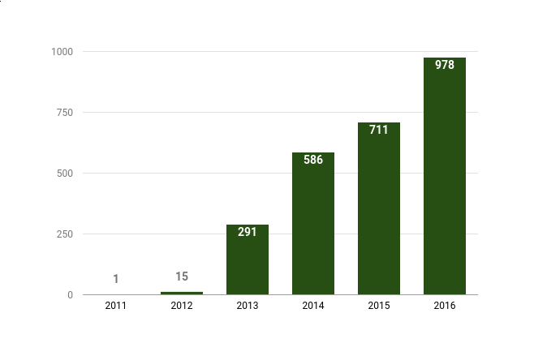
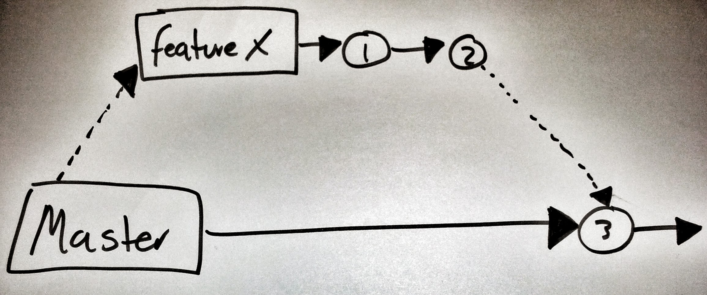

class: middle inverse .top[] # A/B testing with Unleash .silver[Ivar Conradi Østhus] <br /> @ivarconr <br /> Front-End Architect & Developer .silver[Vegard Sandvold] <br /> @vsandvold <br /> Front-End Developer --- ## Production deploys in “week 50” in recent years  --- class: inverse # High speed product development .large[ 1. Short-lived feature branches 2. Feature toggled releases to gradually roll out new features 3. A/B-testing to validate results ] --- class: background-img # master-branch == highway to production <img src="images/highway.jpg"> .img-src[https://www.flickr.com/photos/ar88/4102692617/] .box[ - **~100** developers - **~400** deployable projects - **~1000** weekly production deployments ] ??? - Everything we check in to master: - Built by travis - Unit tests executed - Deployed to test-environments - Integration tests are executed - Deploy to production "automatically" or "push a button"" --- class: middle, center, inverse # The master highway works well for <br /> small changes! ??? - perfect for small changes - tweaks and bug fixes --- # ...but not all changes are small <br /> **Some features requires more effort** - days, weeks, months - multiple teams - multiple applications/services <br /> **Unfinished features** - can not be exposed to end users! - can not block the master branch! --- # Feature branches  ??? - The traditional way to isolate new code - Separate branch *per* feature - Code will **NOT** go to production before it's merged. - Delays the integration cost --- class: center, middle <img src="images/pull_request.png" style="width:50%;" /> ??? Pull Requests! - **The best about branch and merge approach** - Great support in common tools (GitHub, Stash etc) --- # Concurrent branches <img class="fullwitdh border" src="images/feature_branch_double.jpg" /> ??? - What if we have multiple features? - Increased complexity - expensive to merge - Syncing master-fixes can reduce cost - Does features work together? --- class: background-img <img src="images/keep-refactoring-and-carry-on.png" /> ??? - Hard to refactor master - when multiple concurrent branches exists - framweworks and libraries - __let's refactor later!__ --- class: background-img # Feature Toggles <img src="images/Merrydown_Cider Factory.jpg"> .img-src[https://www.flickr.com/photos/howzey/3805038515] ??? **Feature Toggles is a simple technique** - Work on new features directly on master - Roll-out 'unfinished' code to production - Hide unfinished functionality **Separates deploy and release of new features** - Gives more control - When and how to roll-out features. - Gradual roll-out of new features - Test new features early in production - Reducing risk associated with deployment - Fast roll-back --- class: inverse, center, middle # decouple .red[**deployment**] of code <br /> from <br /> .green[**release**] of features ??? - Enables us to: - deploy new versions of application continuously - independent of which features should be enabled - product owner can decide - Switch user from one version to the next (per feature) - Zero-downtime release. - Fast rollback if required. --- # Unleash - Feature toggles framework - All our _feature toggles_ in the same dashboard - A shared and robust client - KISS! - Multi-platform - Official client SDK for Java and Node.js - **It's open source!** - https://github.com/Unleash --- class: middle center <img src="images/3-unleash-diagram.png"> ??? **Three parts:** 1. Unleash API - A simple micro-service 2. Unleash UI - Dashboard for create and update feature toggles 3. Unleash SDK - Client-library for using feature toggling in the applications. --- class: middle .large[ ```java if (unleash.isEnabled("AwesomeFeature")) { // some new magic } else { // old boring stuff } ``` ] ??? - Feature toggle => a simple IF-condition - Easy to get started - Start with a property file --- class: center, middle ## [Unleash UI Demo](http://unleash.herokuapp.com/#/features) --- class: # Activation Strategies **Selective release of features** - Rules that decides when a _feature toggle_ is active - Test new features early on real users - Detect problems before they get big! ??? - This is where the fun begins! - Decide who we want to enable a new feature for! - Enables gradual roll-out of features --- # Common Activation Strategies .img-src[https://github.com/Unleash/unleash/blob/master/docs/activation-strategies.md] - Default - UserWithId - GradualRolloutUserId - GradualRolloutSessionId - GradualRolloutRandom - RemoteAddress - ApplicationHostname ** ⇨ Gradual roll-out of new features** ??? - These are used in FINN.no --- # Increased control .large[ - Allows us to **test** a new feature on a limited group - **Verify** that the new feature solves real user problems - Lightning fast **rollback** if problems are detected - **Iterate** the new feature to make it better ] (Test, Verify, Rollback, Iterate...) ??? **Increased controll** - Test on a small group - Verify a feature, before exposing it to **everyone** - Fast and simple roll-back: - discover errors - not performing - **Iterate until we are done!** - Becomes safer to push code! --- class: background-img <img src="images/pollution.jpg"> # Clean up your mess! .img-src[https://www.flickr.com/photos/epsos/5444678656/] .box[ - Feature toggles are technical debt! - Review your toggles often - Avoid permanent toggles (if you can) ] ??? - **Technical debt from the moment it is created** - a new if-statement - a new path in the application - **Review flags often** - **Delete feature toggles** - when it is not needed anymore - costly to maintain over team - **Avoid permanent 'feature toggles' when possible** - harder to reason about app --- class: background-img # No silver bullet! .box[ - How to test? - Bugs might be hidden for you - You see something else than your users - Harder to reason about the code ] .img-src[https://www.flickr.com/photos/eschipul/4160817135] ??? - **How to test?** - Every toggle represent a new path in your application - **Do not test all possbible combination** - Same configuration as in production! - **You see something else!!?** - You have a toggle ON - Everyone else have it off - You see something else! --- # Avoid feature toggles if you can! .blockquote[Release toggles are a useful technique and lots of teams use them. However they should be your last choice when you're dealing with putting features into production. <br /> <br /> Your first choice should be to break the feature down so you can safely introduce parts of the feature into the product. The advantages of doing this are the same ones as any strategy based on small, frequent releases. You reduce the risk of things going wrong and you get valuable feedback on how users actually use the feature that will improve the enhancements you make later. ] _- Martin Fowler_ ??? - Martin Fowler: - Split up features first, - Only use feature toggles if necessary. - A new feature is a risk until it is **in use by real users.** - Should **not** be an excuse to delay releases, - Should be a reason to release stuff more often! --- # A/B Testing Use Cases - Prototyping experimental features in production - Example: Topfilter - Validating gradual rollout of incremental improvements - Example: Result page grid --- # Motivation - Easily accessible experiment configuration and operation - Randomized and sticky traffic allocation - Precise entry and exit points for tracking and analysis --- # Configuration and reporting **Configuration** - Unleash UI - gradualRolloutAbTesting / abTest - Combined with userWithId for internal testing etc. **Reporting** - Direct access to all relevant business metrics in Adobe - Might as well use Pulse in the future --- # Status and future plans - Client-side storage and tracking - Apps implementation in progress - Connecting experiment configuration and reporting is a challenge - Multi-variant experiments --- class: inverse # High speed product development .large[ 1. Short-lived feature branches 2. Feature toggled releases to gradually roll out new features 3. A/B-testing to validate results ] --- # Feature Branches - Summary **Pros:** - Safe to commit code to separate branch - No code will hit production before it is merged - High degree of code isolation - Code review via _pull-requests_ <br /> **Cons:** - The *merge itself* can be very hard and costly! - Difficult to share new code across branches - Fear of refactoring shared code (frameworks / libs) - How do we know that multiple features works well together? - Continuous integration, testing, demonstration difficult --- ## Feature toggles - Summary #### Pros - No merge problems - Decoupling deployment of code and release of features - Safer to refactor code on master branch - Lightning fast rollback if problems are detected - Selective release via activation strategies - Iterate and improve new features - Test new features in production #### Cons - Feature toggles are technical debt - Accidental exposure of unfinished features (can be a security risk) - Testing becomes harder - Long lived toggles can be costly! --- ## A/B testing - Summary #### Pros - Verify improvement #### Cons - --- <br /> <br /> ## Learn more: - https://github.com/Unleash - http://ivarconr.github.io/feature-toggles-presentation/NRK-2017/ - http://bytes.schibsted.com/unleash-features-gradually/ - http://martinfowler.com/bliki/FeatureToggle.html <table class="bottom"> <tr> <td class="rightify"><img src="images/twitter.png" height="20" /></td> <td class="leftify strong">@ivarconr</td> </tr> <tr> <td class="rightify"><img src="images/finn.png" height="20" /></td> <td class="leftify strong">ico@finn.no</td> </tr> </table>